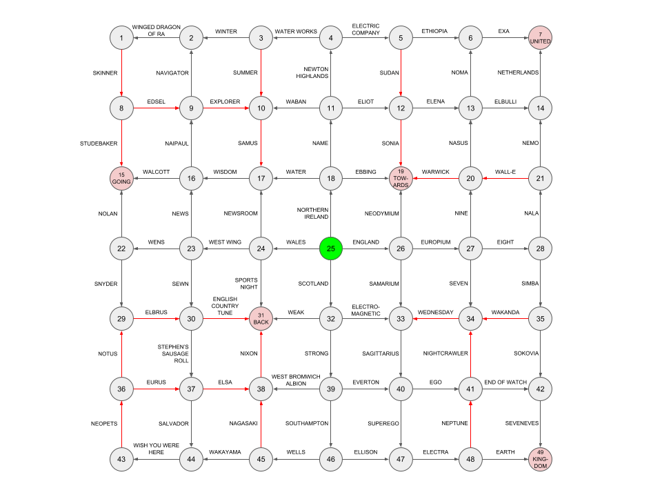

Solution: The Answer to This Puzzle Is...
Answer: HALT
Idea by Brian Chen, Lewis Chen, and Anderson Wang
Clues by Lewis Chen, Anderson Wang, Rahul Sridhar, Ben Yang, Jon Schneider, Colin Lu, and more
Initially, the only text on the puzzle page informs us that “[t]he answer to this puzzle is the country in the United Kingdom.” There are four countries in the United Kingdom: England, Scotland, Wales, and Northern Ireland. When we submit the answer ENGLAND, we’re told that the answer is actually “the non-radioactive element whose atomic weight is between 142 and 152.” This clue has three different answers: neodymium, europium, and samarium. Submitting any of these answers leads to even more clues.
If we type in enough answers, we’ll notice a few things: many (but not all) clues have multiple answers, and almost all of the answers begin with either N, S, E or W. These four letters correspond to the four compass points (north, south, east, and west). Using this, we can organize the clues into a grid, with the original United Kingdom clue at the center, and the four clues that appear when we submit Northern Ireland, England, Scotland and Wales appearing to the north, east, south and west respectively.

Observe that each pair of adjacent cells in this grid is connected by a one-way arrow. Notably, five of the clues have unique answers that do not start with N, S, E, or W. Submitting any of these answers simply takes you back to the same vertex. Read from left to right, these answers are “GOING BACK TOWARDS UNITED KINGDOM”.
This phrase obliquely clues the final step. The majority of the arrows point away from the center of the grid.
If we highlight the arrows that point towards the center, we spell HALT, which is our final answer.
Here is the full list of clues and their answers:
| # | Clue | Answer(s) |
|---|---|---|
| 1 | ...the surname of the character who invites Superintendent Chalmers over for "steamed hams" | SKINNER |
| 2 | ...the Egyptian God Card whose name includes an actual Egyptian god (disregarding any leading article) | WINGEDDRAGONOFRA |
| 3 | ...the season with a solstice | SUMMER / WINTER |
| 4 | ...the Monopoly utility | ELECTRICCOMPANY / WATERWORKS |
| 5 | ...the country that contains the Blue Nile | ETHIOPIA / SUDAN |
| 6 | ...the three-letter SI prefix | EXA |
| 7 | ...the airline company that also appears in two other clues in this puzzle | UNITED |
| 8 | ...the automobile brand mentioned in "We Didn't Start the Fire" | EDSEL / STUDEBAKER |
| 9 | ...the second word in the name of the web browser with a majority market share in the late 1990s | EXPLORER / NAVIGATOR |
| 10 | ...the character in the Super Smash Bros. franchise whose name starts and ends with the same letter | SAMUS |
| 11 | ...the Boston T station between Newton Centre and Woodland | ELIOT / NEWTONHIGHLANDS / WABAN |
| 12 | ...the first name of the Supreme Court justice appointed by Barack Obama | ELENA / SONIA |
| 13 | ...the restaurant that has topped Restaurant Magazine's list of best restaurants in the world at least 3 times | ELBULLI / NOMA |
| 14 | ...the country that won gold medals in both men's and women's speed skating events at the 2018 Olympics | NETHERLANDS |
| 15 | ...the first word of a Phil Collins studio album that is also the last word of a different Phil Collins studio album | GOING |
| 16 | ...the surname of the literature Nobelist born in a Caribbean country | NAIPAUL / WALCOTT |
| 17 | ...the two-syllable D&D stat | WISDOM |
| 18 | ...the last Scrabble-playable word in the 2018 Oscar nominee for Best Picture whose title is at least 4 words long | EBBING / NAME / WATER |
| 19 | ...the seven-letter preposition containing the letters A and W | TOWARDS |
| 20 | ...the League of Legends character based on a canine | NASUS / WARWICK |
| 21 | ...the title character of a Pixar film released in the 2000s | NEMO / WALLE |
| 22 | ...the surname of the man who directed a live-action movie starring Batman in this century | NOLAN / SNYDER |
| 23 | ...the four-letter Scrabble-playable word using each of the four compass points exactly once | NEWS / SEWN / WENS |
| 24 | ...the Aaron Sorkin TV series that ran for at least two seasons (disregarding any leading article) | NEWSROOM / SPORTSNIGHT / WESTWING |
| 25 | ...the country in the United Kingdom | ENGLAND / NORTHERNIRELAND / SCOTLAND / WALES |
| 26 | ...the non-radioactive element whose atomic weight is between 142 and 152 | EUROPIUM / NEODYMIUM / SAMARIUM |
| 27 | ...the digit in the top row of a standard numpad | EIGHT / NINE / SEVEN |
| 28 | ...the lion Zazu babysits at the beginning of The Lion King | NALA / SIMBA |
| 29 | ...the mountain (without Mount) that is the tallest in its continent and also shares the same first letter as that continent | ELBRUS |
| 30 | ...the puzzle game commercially released by Increpare Games | ENGLISHCOUNTRYTUNE / STEPHENSSAUSAGEROLL |
| 31 | ...the body part that could also appear as a button on your browser | BACK |
| 32 | ...the force unified by a Grand Unified Theory | ELECTROMAGNETIC / STRONG / WEAK |
| 33 | ...the zodiac constellation that contains another constellation as a substring | SAGITTARIUS |
| 34 | ...the day of the week that Lent starts on, in Roman Catholic tradition | WEDNESDAY |
| 35 | ...the fictional country in the Marvel Cinematic Universe | SOKOVIA / WAKANDA |
| 36 | ...the wind in Greek mythology whose name is 5 letters long | EURUS / NOTUS |
| 37 | ...the first name of the artist who helped design a "shoe hat" and a "lobster dress" | ELSA / SALVADOR |
| 38 | ...the surname of the president of the United States who resigned | NIXON |
| 39 | ...the 2016-2017 Premier League team whose name ends with "on" | EVERTON / SOUTHAMPTON / WESTBROMWICHALBION |
| 40 | ...the part of the Freudian psyche that is not present at birth | EGO / SUPEREGO |
| 41 | ...the film starring Jake Gyllenhaal set entirely in Los Angeles | ENDOFWATCH / NIGHTCRAWLER |
| 42 | ...the Neal Stephenson novel whose title is a palindrome | SEVENEVES |
| 43 | ...the online game that was purchased by the creator of the JumpStart games from Viacom in 2014 | NEOPETS |
| 44 | ...the Pink Floyd album that contains a nine-part song | WISHYOUWEREHERE |
| 45 | ...the Japanese prefecture whose flag is a blue symbol on a white background | NAGASAKI / WAKAYAMA |
| 46 | ...the surname of the author of a famous novel whose title refers to an "invisible man" | ELLISON / WELLS |
| 47 | ...the play by Sophocles that shares a name with one of the Pleiades | ELECTRA |
| 48 | ...the blue planet that isn't Uranus | EARTH / NEPTUNE |
| 49 | ...the taxonomic rank shared by scorpions and giraffes but not giraffes and venus fly traps | KINGDOM |
Author’s Notes
This puzzle went through a lot of different design iterations and quite a few people helped with coming up with both ideas and clues. The clues are quite constrained because the answers must begin with N/S/E/W, especially when limiting yourself to only a few quantifiers, so it was truly a group effort to come up with all of them.
The initial idea was conceived by Brian (although the only recognizable vestiges remaining are the answer submission abuse idea, as well as questions with multiple answers). Then a group of us tried to brainstorm more interesting ways to extract from a graph, and the idea of taking edges with reversed directions for extraction was by Lewis. We experimented with various different grid layouts, but when the initial grid ended up being too difficult in testsolving, Anderson proposed the current grid with arrows pointing out from the center, which is much more symmetric. Even so, more testsolving indicated that we probably needed a cluephrase to help hint at extraction, so the cluephrase spelled out by the sinks was created by Rahul.
Some things were unfortunately a consequence of the grid layout. For instance, HALT has to be read top-down then left-right instead of the normal reading order, since the L cannot be in the bottom left corner. If it were, then the corner of the L would be an inaccessible source node, much like the center node is right now. We had to ensure that the grid contained only one such node.
Also, even the clues with only a single answer were worded ambiguously such that they could conceivably take on multiple answers.
Throughout the long process, we encountered many interesting stories and/or issues, including:
- The discovery that the four countries of United Kingdom start with N, S, E, W, respectively.
- To a lesser extent, that we could relate the Strong, Weak, and Electromagnetic forces via the Grand Unified Theory.
- Initially, before we had a cluephrase, our sinks were literally questions that had no answer, such as “...the winner of the 2012 Pulitzer Prize for Fiction”.
- In a previous grid, one of our testsolvers had the correct idea of considering arrows pointing in different directions. However, instead of drawing out these edges on the picture, instead he interpreted them as Morse code. And lo and behold… they took on ONLY the letters N, E, W, and S. Moreover, drawing out the first sequence (EWWESS) resulted in drawing out a T, and while the second sequence was a bit less compelling (SSENNE), this coincidental and totally unintended red herring floored us!
For even more statistics about this puzzle, check out this PDF!